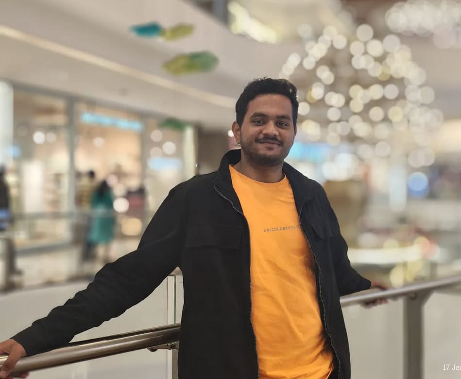
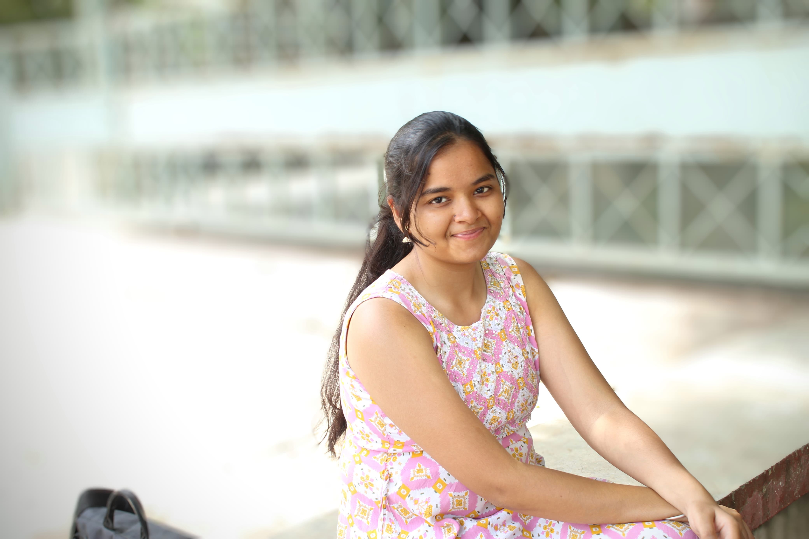

॥ दोहा ॥
गऊ हमारी मातु है, हम पाले संतान।
गऊ सेवा से मिलेगा, सब सुख संपति खान॥


Interning at Poona Panjarpol Trust was a heartwarming experience. I learned about animal care, veterinary support, and the importance of compassion in handling rescued and abandoned cattle. It was a journey of empathy, responsibility, and deep respect for all living beings.
- Yog ChopadaInterning at Poona Panjarpol Trust has been an incredibly enriching experience. I got the opportunity to work closely on building a digital solution that supports the welfare of rescued and abandoned cattle. From developing the website to managing the health tracking database, every task brought me closer to understanding the needs of the cattle and the importance of their care. It was a journey of purpose, compassion, and meaningful contribution.
– Sarthak KharcheMy internship at Poona Panjarpol Trust was a truly meaningful and eye-opening experience. I got to learn about cattle care, feeding, health routines, and the spiritual and cultural importance of Gaushalas in India. Working with the dedicated team inspired me to value compassion, service, and sustainability. I'm grateful for the opportunity and the warm support I received throughout.
- Yash TripathiInterning at Poona Panjarpol Goshala has been a heart-touching and peaceful journey. Being surrounded by cows every day, learning about their care, and bonding with the calves was both soothing and eye-opening. The calmness of the environment and the warmth of these gentle beings made this internship truly special. It's an experience I'll always cherish—and one I hope to revisit often.
- Krushna Nirmalkar My internship at Panjarpol Gaushala was life-changing. The serene atmosphere and the people's dedication to seva (selfless service) left a deep impact. I gained not just knowledge about cows' importance but also a sense of inner peace and purpose. The warmth and humility of the people made me feel welcomed. I'll always cherish this experience and wouldn't hesitate to return.
- Anisha ChoudharyVisiting the gaushala was a peaceful and heart-touching experience. The way cows are cared for here shows real dedication and love. It's not just a shelter, it's a sacred place where cows are treated like family. The environment is clean, calm, and spiritual - it gives a sense of purity and connection to our Indian culture and values.
- Chetan ShinkarWorking with the Gaushala was a peaceful and meaningful experience for me. I saw how much love and care the people here give to the cows. Their work is not just a job — it's full of devotion and kindness. Through this experience, I learned how important cows are to our culture, health, and environment. I felt very connected to nature and our traditions. I'm thankful for the opportunity and feel proud to be a part of this good work.
- Sejal WaghSpending time at the Gaushala was a truly special and spiritually fulfilling experience for me. The peace, cleanliness, and loving care given to the cows made a deep impression on me. I didn't just gain technical knowledge — I also learned valuable lessons about compassion, dedication, and service. The people here work with pure devotion, and it inspired me deeply. This internship helped me feel more connected to Indian traditions, values, and nature. I feel proud and grateful to have been part of such a meaningful cause.
- Rutul Bhiwapurkar Interning at Poona Panjarpol Trust was a heartwarming experience. I learned about animal care, veterinary support, and the importance of compassion in handling rescued and abandoned cattle. It was a journey of empathy, responsibility, and deep respect for all living beings.
- Yog ChopadaInterning at Poona Panjarpol Trust has been an incredibly enriching experience. I got the opportunity to work closely on building a digital solution that supports the welfare of rescued and abandoned cattle. From developing the website to managing the health tracking database, every task brought me closer to understanding the needs of the cattle and the importance of their care. It was a journey of purpose, compassion, and meaningful contribution.
– Sarthak KharcheMy internship at Poona Panjarpol Trust was a truly meaningful and eye-opening experience. I got to learn about cattle care, feeding, health routines, and the spiritual and cultural importance of Gaushalas in India. Working with the dedicated team inspired me to value compassion, service, and sustainability. I'm grateful for the opportunity and the warm support I received throughout
- Yash TripathiInterning at Poona Panjarpol Goshala has been a heart-touching and peaceful journey. Being surrounded by cows every day, learning about their care, and bonding with the calves was both soothing and eye-opening. The calmness of the environment and the warmth of these gentle beings made this internship truly special. It's an experience I'll always cherish—and one I hope to revisit often.
- Krushna NirmalkarMy internship at Panjarpol Gaushala was life-changing. The serene atmosphere and the people's dedication to seva (selfless service) left a deep impact. I gained not just knowledge about cows' importance but also a sense of inner peace and purpose. The warmth and humility of the people made me feel welcomed. I'll always cherish this experience and wouldn't hesitate to return.
- Anisha ChoudharyVisiting the gaushala was a peaceful and heart-touching experience. The way cows are cared for here shows real dedication and love. It's not just a shelter, it's a sacred place where cows are treated like family. The environment is clean, calm, and spiritual - it gives a sense of purity and connection to our Indian culture and values.
- Chetan ShinkarWorking with the Gaushala was a peaceful and meaningful experience for me. I saw how much love and care the people here give to the cows. Their work is not just a job — it's full of devotion and kindness. Through this experience, I learned how important cows are to our culture, health, and environment. I felt very connected to nature and our traditions. I'm thankful for the opportunity and feel proud to be a part of this good work.
- Sejal WaghSpending time at the Gaushala was a truly special and spiritually fulfilling experience for me. The peace, cleanliness, and loving care given to the cows made a deep impression on me. I didn't just gain technical knowledge — I also learned valuable lessons about compassion, dedication, and service. The people here work with pure devotion, and it inspired me deeply. This internship helped me feel more connected to Indian traditions, values, and nature. I feel proud and grateful to have been part of such a meaningful cause.
- Rutul BhiwapurkarWe welcome volunteers and supporters! Whether you want to help with daily care, organize events, or spread awareness, your contribution matters.
See how Panjarpol Poona Trust is transforming lives and nurturing compassion through our dedicated services for animals and the community.
| S.No. | Product |
|---|---|
| 1 | Biological Letter (Jaivik Khat) |
| 2 | Vermi Compost (Gandul Khat) |
| 3 | Vermiwash |
| 4 | Disharine Extract (Darshparni Ark) |
| 5 | Gomutra |
| 6 | Gokrupamrit |
| 7 | Cow Dung Cake |
*All the aforementioned products are available solely through offline purchase at our sacred premises
गऊ हमारी मातु है, हम पाले संतान।
गऊ सेवा से मिलेगा, सब सुख संपति खान॥
जय गऊ माता कृपा तुम्हारी।
दूर करो भवसागर भारी॥
गऊ ही ब्रह्मा, विष्णु गऊ।
गऊ ही शिवरूप समऊ॥
गऊ में बास करे सब देव।
गऊ सदा करे भव से सेव॥
गऊ चरन धरती पर ध्यानी।
गऊ बिना जीवन अज्ञानी॥
गऊ दूध अमृत के समाना।
जीवन का यह सच्चा खजाना॥
गऊ माता की जो सेवा।
पावे जीवन में अमिट मेवा॥
गऊ को जो ग्रास खिलावे।
उसका हर संकट टल जावे॥
गऊ की जो करे पूजा।
भवसागर से पावे दूजा॥
गऊ रक्षा धर्म महान।
गऊ वंश बढ़ावे खान॥
गऊ माता करे रखवाली।
सदा बनी रहे घर में खुशहाली॥
जो करे गऊ माता की सेवा।
उसका जीवन होवे मेवा॥
गऊ माता से नाता जोड़ो।
अपने जीवन को उजियारा करो॥
जो गऊ को मारन धावे।
वह नरक कुंड में जावे॥
गऊ माता को जो अपनाए।
सात जनम सुख पावे॥
गऊ चालीसा जो कोई गावे।
भवसागर से पार वो जावे॥
गऊ कृपा से जोड़े नाता।
सफल हो जीवन, हर दिन पावन भ्राता॥
Your donations help us feed and care for over 2,200 cattle. Every rupee counts!
Phone: 8999158881 (WhatsApp available)
Email: punepanjarpoltrust1855@gmail.com
Address: Pune-Nashik Highway, Bhosari, Pune – 411039